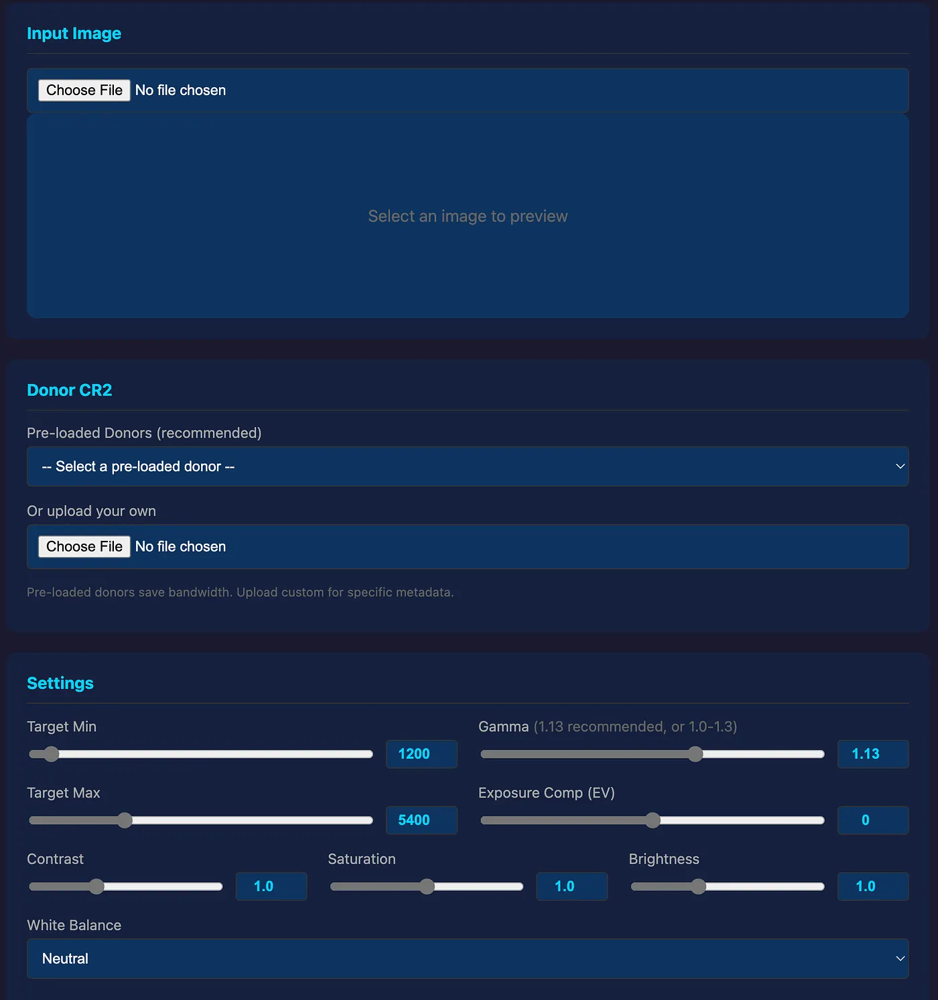

Social Media Complicit in Hiding Canon RAW Editing Vulnerability?
A Security Disclosure about legacy RAW CR2 Image hacking on social media gets deleted. The Question Is: Why?
Are we not allowed to expose vulnerabilities, frauds, scams, and Disinformation on social media platforms?
Let's start by thanking these platforms for supporting bad actors, that's complicit by definition, and strengthens my case further.
There's a vulnerability in how the world understands digital image authenticity. RAW files - the format photographers and forensic analysts trust as "uneditable proof" - can be fabricated from scratch. Not edited. Created.
I built a tool to demonstrate this: https://cr2editor.web.app
Within hours of posting about it on social media, my account was terminated. My communities were banned. My posts - containing forensic analysis, histograms, and scientific evidence - were erased.
No warning. No policy citation. No appeal.
The Vulnerability
Camera RAW files (CR2, NEF, ARW) are treated as tamper-proof because they contain unprocessed sensor data. Courts accept them. Journalists trust them. The public believes "RAW = authentic."
This assumption is false.
Using techniques documented since 2016 (libraw, dcraw), anyone can:
- Hollow out a legitimate CR2 file
- Insert a synthetic image (Photoshop, Blender)
- Produce a file that passes casual inspection
The only forensic signature that exposes this fraud? Sensor noise analysis. Real cameras produce thermal noise, shot noise, read noise - a "noise floor" visible in histogram analysis. Synthetic insertions lack this floor entirely.
The Evidence That Was Deleted
My post contained forensic analysis of 19 suspicious cloud images. The findings:
Real Canon 5D Mark II histogram (14-bit):
Suspected fake (Jonas cloud image):

Zero pixels in the noise floor. A physical impossibility for a functioning sensor.
The physics is simple: CMOS sensors are never silent. Thermal energy, electrical fluctuations, and photon shot noise guarantee activity even in complete darkness. A histogram showing absolute zero in these ranges means the sensor was never active. The image was inserted into a hollow container.
This is what I posted. This is what the platform deleted.
The Disinformation Threat Model
Disinformation operations require three components:
- Fabricated evidence - Images, documents, recordings that appear authentic
- Distribution network - Platforms where content spreads
- Suppression mechanism - Systems that silence anyone who exposes the fabrication
RAW file forgery provides the fabricated evidence. Social media provides distribution. And when platforms delete forensic analysis exposing the methodology?
They become the suppression mechanism.
These platforms aren't neutral here. By deleting posts that explain how RAW files can be faked and how to detect fakes, they actively protect the operational model of disinformation campaigns.
The AI Training Problem
Major social media platforms license their data to AI companies. Every post, comment, and discussion feeds models that will shape how future systems understand truth, evidence, and authenticity.
When platforms scrub forensic security research while leaving disinformation intact, they poison the training data. AI systems learn that certain technical discussions are "violations" while fabricated narratives are acceptable.
This isn't hypothetical. It's happening now.
What I Posted (Before Deletion)
Post 1: Forensic Analysis
"Real camera raw files capture light data in a smooth, natural spread of values. Genuine photos never have big 'dead zones' (gaps with zero pixels). Jonas images show exactly that - entire 19 images show large dead zones, unnatural gaps and peaks - suggesting they're inserted synthetic images into a hollowed out CR2 container."
Post 2: Educational Tool
"This EDUCATIONAL TOOL is to promote critical thinking and demonstrate how easily narrative disinformation can be manufactured."
CR2 Creation App - 2016 scripts. Reproduced Jonas Cloud fakes 100%.
https://cr2editor.web.app

The tool at cr2editor.web.app exists so anyone can verify this vulnerability themselves. Create a synthetic CR2. Examine its histogram. Compare to authentic camera output. The difference is unmistakable.
The platform's response? Termination. Community bans. Complete erasure.
The Pattern
I created a new account. Posted once about CR2 research. Banned within minutes.
This isn't spam filtering. This isn't community moderation. This is targeted suppression of specific technical content.
What policy prohibits explaining that camera RAW files can be fabricated?
Who benefits from keeping this vulnerability hidden?
Why does forensic security research trigger instant termination while actual disinformation thrives?
Verify It Yourself
The tool is live: https://cr2editor.web.app
Upload a Photoshop image. Select a donor CR2. Generate a synthetic RAW file.
Then examine the histogram. You'll see exactly what the scammers see - and exactly what they don't want you to understand.
RAW files are not proof. They never were. The only question is whether platforms will let you know that, or delete you for saying it.
Resources
- Tool: https://cr2editor.web.app
- Detection method: 14-bit histogram analysis of optical black region (1023-1280 DN)
- Full forensic evidence: CR2 RAW File Fraud Analysis
- Forensic Script: LumPlot14Bit1023.py
Social media deleted this research. MediaTruth hasn't.